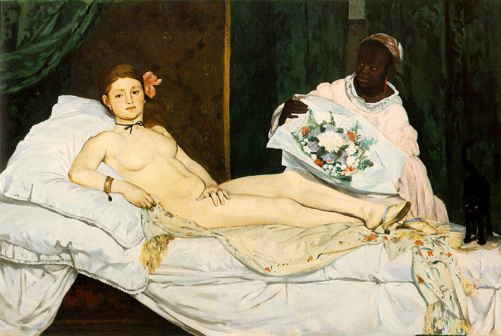
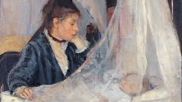

In de kunstgeschiedenis is het verschil tussen de mannelijke en vrouwelijke blik op het naakt een centraal thema, dat definitief op scherp werd gesteld bij de receptie van Édouard Manets Le Déjeuner sur l'herbe in 1863.

Édouard Manet, Le Déjeuner sur l'herbe (1863) – Musée d'Orsay
Hoewel dit werk vaak wordt gezien als het startpunt van het modernisme, vertelt het in de context van 2026 ook een verhaal over macht, autonomie en de strijd tegen de ‘gecodeerde’ blik.
De Breuk van 1863: Victorine Meurent als Subject
Het naaktmodel op dit schilderij is Victorine Meurent. Zij was Manets favoriete model en staat ook afgebeeld op zijn andere bekende werk uit datzelfde jaar, Olympia.

Édouard Manet, Olympia (1863) – De confrontatie met de toeschouwer.
Het schilderij veroorzaakte een schandaal omdat het een alledaagse, naakte vrouw toonde in het gezelschap van geklede mannen. In tegenstelling tot klassieke naakten kijkt de vrouw de toeschouwer direct en zelfverzekerd aan.
Het is essentieel om Meurent niet enkel als passief ‘canvas’ te zien. Zij was zelf een getalenteerd schilderes die vaker op de Parijse Salon exposeerde dan veel van haar mannelijke tijdgenoten. Haar blik is die van een professionele collega die de wetten van de kunstwereld kende. Zij “kijkt terug” en maakt de toeschouwer bewust van zijn eigen voyeurisme. Hiermee haalde Manet de vrouw uit de fantasiewereld en gaf haar een realistische, bijna confronterende menselijkheid.
“Zij kijkt terug — en dwingt de kijker zichzelf te zien.”
De Mannelijke vs. de Vrouwelijke Blik
De Mannelijke Blik (Male Gaze)
Geponeerd door Laura Mulvey (1975), beschrijft dit concept hoe kunst de wereld bekijkt vanuit een heteroseksueel mannelijk perspectief. De vrouw is hierin een passief object van begeerte, bedoeld voor visueel plezier. In de 19e eeuw bood de mythologische context (zoals Venus) de kijker een ‘veilige’ afstand.
De Vrouwelijke Blik (Female Gaze)
Hier verschuift de macht. Vrouwen worden getoond als autonome individuen met eigen emoties. Waar Manet de mannelijke blik ontmaskerde door provocatie, zien we de puurste vorm van de Female Gaze bij Berthe Morisot. In haar werk zijn vrouwen niet bezig met ‘gezien worden’, maar bevinden zij zich in een staat van psychologische introspectie.

Berthe Morisot, De Wieg (1872) – Introspectie in plaats van objectivering.
De Nieuwe Uitdaging: AI en het Genie
Vandaag de dag zetten we deze discussie voort in de digitale ruimte. AI-modellen worden getraind op miljarden beelden uit het verleden, die vaak doordrenkt zijn van de traditionele Male Gaze. Zonder menselijke correctie genereert AI ‘geïdealiseerde’, passieve lichamen die exact voldoen aan oude voyeuristische normen.
Algoritmische bias: de herhaling van historische patronen in digitale vorm.
Het project stelt de cruciale vraag: Wie is het genie? In 1863 was dat de mannelijke schilder; de vrouw was de muze. In 2026 verschuift die macht naar de ‘prompter’. Als een algoritme het beeld genereert op basis van bevooroordeelde data, vervalt dan de menselijke autonomie — of wordt dit juist een nieuw veld van verzet?
Conclusie: Van Olieverf naar Algoritme
De radicale breuk die Manet en Meurent forceerden, is actueler dan ooit. Waar men destijds streed tegen de morele kaders van de Parijse Salon, vechten we nu tegen de onzichtbare kaders van algoritmes.
De brutale blik van Victorine Meurent is de ultieme herinnering voor de moderne maker: autonomie ontstaat pas wanneer we de kijker — of dat nu een 19e-eeuwse burgerman is of een 21e-eeuws algoritme — dwingen zijn eigen vooroordelen onder ogen te zien.
De ware Female Gaze in het tijdperk van AI ligt in het hacken van de traditie: door menselijke imperfectie en eigenzinnige regie terug te claimen in een wereld van perfecte, maar vaak zielloze pixels.